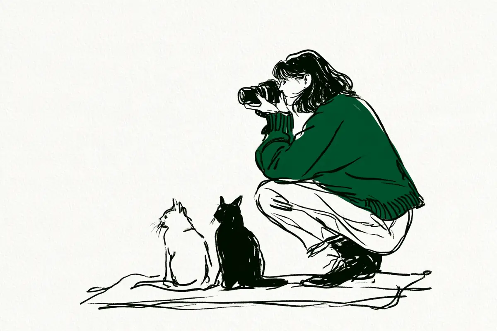

現在地: 買ったけど使えてない
一眼の写真が暗い・白っぽい…露出補正で直る場面と直らない場面

明るい場所で撮ったのに、一眼レフやミラーレス(レンズを交換できるカメラ)の写真が暗い、または白っぽい。露出補正(カメラが決めた明るさを、自分で少し明るく・暗くずらす機能。言葉の意味)を、画面の大部分が白っぽいなら+、黒っぽいなら−に動かすと直る場面があります。カメラが画面全体を中間の明るさに近づけようとするために起きるずれだからです。ただし、空と地上の明暗差や、明るさを全部自分で決めるMモードのように、露出補正では直らない場面もあります。
症状と場面から補正の向きを引くなら、症状別の早見表へ。暗い場所でブレる・ザラザラになるのは別の原因なので、暗いところで撮れない…のほうが合います。
私はカメラを持っていないので、メーカーの公式ページと取扱説明書を読み、声と照らし合わせて整理する側です。声は、写真の明るさや露出補正についてQ&Aサイトやnoteに書いた35人分です。試し撮りの話は出てきません。その代わり、自分の写真で確かめる手順をすぐ下に置きました。
ソニーの公式レッスンは、この症状を読者への問いかけで言い表しています。
目で見た感じの被写体は白くて明るいのに、写真にするとなぜかグレーっぽく、少し暗い感じになってしまった経験はありませんか？
露出補正の使い方: 自分の写真で確かめる手順
順番は私の整理です。全自動のままだと露出補正を動かせない機種があるので、その場合は先にPモードにするところから。
- 撮った写真をその場で再生し、暗いのか白っぽいのかを見る
- 明るい屋外で画面が見づらければ、ヒストグラム(明るさの分布を山の形で見せるグラフ)を出す。出し方は説明書の索引でヒストグラムを引く
- 画面の大部分が白っぽいもの・明るい背景なら+側へ、黒っぽいもの・暗い背景なら−側へ動かして撮り直す
- 向きに迷ったら、+1・0・−1の3枚を撮っておく(キヤノンの用語集がすすめる方法。後述)
- 白とび(明るすぎて白一色になり、細かい部分が消えた状態)が気になるなら、点滅表示で場所を見る。ニコンはハイライト表示、キヤノンは白飛び警告表示という呼び方
- 撮り終わったら補正を0に戻す。電源を切っても残る機種があります(戻し方)
3で動かす量の刻みと幅は機種ごとに違うので、下の表にまとめました。
症状別の早見表
左の2列から自分の写真に近い行を探してください。右端の列は、その向きが公式ページにあるものか、声や私の理屈だけなのかの区別で、出典は各節の本文にあります。
| 症状 | 場面 | 補正の向き | どこに書いてあったか |
|---|---|---|---|
| 暗い・灰色っぽい | 白い壁・白い背景・白いものが画面の大部分 | +側 | 公式(理屈の節) |
| 顔が暗い | 雪を背景にした人 | +側 | 公式 |
| 灰色っぽい・白とび | 晴天の雪景色そのもの | 0から。曇りや日陰なら+ | 雑誌+公式(例外の節) |
| 顔が暗い | 逆光(背中側から光) | +側。背景の白とびは増える | 公式+写真家の連載+声(逆光の人物) |
| 白っぽい・顔が白く光る | 黒い服・黒い背景・黒いものが画面の大部分 | −側 | 公式 |
| 白とび | 暗い背景の中の、白い小さな花 | −側 | 声(1人)(例外の節) |
| 白とび | 強い日差しで、空や白い建物がとんでいる | −側 | 公式+声(極端な明るさ) |
| 暗い/白っぽい | 夜景 | 明かりが暗く写るなら+、空の黒さが薄れて白っぽいなら− | 公式+販売店 |
| 空が白く、地上が暗い | 空と地上の明暗差 | 露出補正では片方しか合わない | 理屈+声(明暗差) |
| 補正しても変わらない | Mモード、ISO固定 | 露出補正が写真に反映されない機種がある | 公式(Mの節) |
1行目と7行目はどちらも白いものの話ですが、違いは白とびが起きているかどうかです。白が灰色に沈んでいるなら+、白がとんで細かい部分が消えているなら−、と症状で分けます。
公式の行も、確認したページの説明であって、どの機種でもその量だけ補正すれば合う、という保証ではありません。同じ場面でも、カメラの測光(明るさを測る仕組み)の種類と設定で、ずれる量は変わります。キヤノンの用語集では、評価測光は明るい太陽が画面に入っても暗くなりにくいとされています。一方、平均測光では暗くなるので+側に補正が要る、とあります(キヤノン 写真用語集「測光」)。
なぜ明るい場所でも暗く、または白っぽく写るのか
写真の明るさ、つまり露出は、センサー(光を受け止める板)に入れる光の量で決まります。全自動やPモードでは、カメラが被写体の明るさを測ってこの量を決めます。タムロンの解説によると、その基準は反射率18%のグレー(白と黒の真ん中くらいの灰色)です。これを正しく写せる露出を、標準露出と呼びます(タムロン「一眼カメラの露出とは？露出を決める要素と露出補正の使い方」)。白い雪景色でもこの基準を仮定するので、白が灰色っぽく写りやすい、と同じページは続けています。パナソニックの講座も、同じ18%の基準で説明しています(LUMIX デジタルカメラ講座「適正露出（第二回）」)。
ソニーの公式レッスンは、同じことを白い被写体の側から書いています。
白っぽい被写体を撮った場合には、白い部分を「明るい」と判断して、明るさを抑えて記録しています。
パナソニックの講座の第九回は、白一色の背景と黒一色の背景を対にしています。白一色では自動露出が明るさを抑えるので、背景は灰色に、人の顔は暗くなりがち。黒一色では明るさを増やすので、顔が白くとびがち、という内容です(LUMIX デジタルカメラ講座「露出補正とオートブラケット撮影（第九回）」)。
図1の、カメラは画面を中間の明るさに近づけようとする、という一文は、この3社の説明から私が組み立てた理屈です。キヤノンの用語集にあるのは向きだけで、白っぽい被写体は明るい側、黒っぽい被写体は暗い側、とあります(キヤノン 写真用語集「露出補正」)。ニコンの測光の解説は、画面を複数の部分に分けて測るという内容です(ニコン「測光」)。
18%という数字は、タムロンやパナソニックの解説で使われている説明です。一方、露出計の基準の決め方から計算すると12〜13%くらいになる、という指摘もあります(測光の項目にまとめています)。この記事では、正確な数字ではなく、中間の明るさ、くらいの意味で使っています。また、今のカメラの分割測光(画面を細かく分けて測る方式。評価測光・マルチパターン測光など)は明暗のバランスを取るので、いつも理屈どおりの量だけずれるわけではありません。
逆光・白い背景で、撮りたいものが暗くなる
逆光で人の顔が暗くなるのも、同じ動きです。ニコンの困ったときのガイドは、理由をこう説明しています。
被写体の背後から、カメラに向かって光がさす逆光時、カメラは光が明るすぎると判断し、露出を下げます。
このページがすすめる対策は、露出補正ではなく、アクティブD-ライティングという暗い部分を明るく補うニコンの機能でした。一方、リコーイメージングのサイトにある写真家の連載は、逆光の花が例です。露出補正をしないと主役が暗く写る、と書いています(シャシンのジカン 水咲奈々「8.暗い被写体を明るく写したい」)。
声では、夕日を背にした枯れ草がくすんだオレンジ色になった人がいました。回答を参考に数日間撮り直したと書いています(Yahoo!知恵袋「お礼500枚！夕方の写真が暗くなります。私は最近風景写真を撮り始めた初心者です...」)。
ただ、+側に動かすと、明るい背景はもっと明るくなります。逆光の人物を撮る人の相談です。
人の表情をちゃんと撮りたいから、露出補正でプラス1〜2にすることが多いですが、そうすると今度は背景が白飛びしてしまい。
露出補正は画面全体を一緒に動かすので、顔と背景の両方は合わせられません。両方を残したいときの手は、逆光の人物の項に回します。
黒い服・黒い背景で、白っぽくなる
反対の向きもあります。コンパクトカメラで屋外の集合写真を撮った人の相談です。
屋外で集合写真を撮りました。しかし、ほぼ全員の顔が白く光っていて顔がよくわかない状態になりました。
質問者は返信で、全員が黒い服を着ていたと補足しています。回答者は、カメラが暗いと判断して明るくしたと見て、−1くらいをすすめていました。パナソニックの講座の、黒一色の背景で顔が白くとぶ、という説明と同じ形です。
向きは、キヤノン・パナソニック・タムロンの3社が−側でそろっています。タムロンは、黒い被写体は明るめに写りやすいので、マイナス補正で黒を黒っぽく表現する、と書いています。
白はプラス・黒はマイナスが当てはまらないとき
ここまでの向きは基本であって、いつも当てはまるわけではありません。キヤノンの用語集は、白い花(スノーフレーク)を+1・0・−1で撮り比べています。
この光線状態の場合は、写真2の露出補正なし（0）が適正露出になりました。
白い花でも、光の当たり方によっては0が合う。白なら必ず+、とは限らない根拠です。向きの基本と同じページにある作例です。
雪は、場面で切り分けると整理できます。リコーのFAQが+側と書いているのは、雪を背景に人物を写すときです(リコーイメージング FAQ。レンズ一体型カメラのQ&Aで、機種名はページにありません)。タムロンも雪景色は+側ですが、天気の条件は分けていません。カメラ雑誌のWeb版は、雪景色そのものを晴天と曇天で分け、晴天の雪は0〜−1、曇天や日陰の雪は+0.3〜1としています。
白いものはプラス補正という昔からの常識は、カメラの測光機能が向上した今では通用しません。
まとめると、雪の中で人の顔が主役なら+。晴天の雪景色そのものは0から始めて、白とびしていれば−。迷ったら+1・0・−1の3枚を撮る、です。
声にも、白いものを−側で撮った人がいます。林の中の白い小さな花をマクロレンズ(近寄って大きく写すレンズ)で撮って、花が白くなってしまった人のお礼です。
露出補正は、画面が暗い時使っていましたが、白トビ時にマイナスにすればいいのですね！
白い花でも、画面の中で小さく、周りが暗い林なら、カメラは暗い部分に引っ張られて明るくする。だから白い部分がとぶ。これは図1からの私の理屈です。回答者も、画面いっぱいに白い花を写すなら逆に1〜2段プラス、と書いていて、白い面積で向きが変わる点は同じです。雪と花を撮った人の実感も、白が大部分なら+1くらい、花が入ると少し下げる、です(note「raw現像は露出補正だけでいい？ : 雪と花の場合」)。
夜景も、症状で向きが決まります。タムロンは、街灯や建物の明かりが暗く写る場合はプラス補正(タムロンの同じページ)。カメラ販売店のフジヤカメラのブログは、マイナス補正で空の黒さや光のコントラストが際立つ、としています(フジヤカメラ「カメラの露出補正とは？使い方や使用シーンを解説！」)。明かりが暗く沈むなら+、空の黒さが薄れて白っぽいなら−。基本の向きどおりです。
撮った写真・ヒストグラム・白とび表示で確かめる
向きに例外があるので、確かめ方のほうが大事になります。ニコンの基礎知識は、撮った画像を見て、明るくしたければ+側、暗くしたければ−側に補正して撮り直す、という手順です(ニコン「露出補正」)。
ただ、明るい屋外では背面の画面そのものが見づらいことがあります。そのときに使えるのがヒストグラムで、ニコンのZ50IIの活用ガイドには、露出補正との関係がはっきり出ています。
露出補正を＋側にすれば山が右側に寄り、－側にすれば山が左側に寄ります。
山が右端にくっついていれば白とび、左端なら黒つぶれ(暗すぎて黒一色)の部分があります。山が真ん中にあるのが正しい、という決まりはなく、雪景色なら右寄り、夜景なら左寄りが自然です(ヒストグラム)。
白とびについては、ニコンの別のガイドが、画面だけでは分からないことを認めています。
とはいえ、白とびしているのか、それともわずかでも情報が残っているのか、撮影モニターでは判断しきれないときがあります。
そこで使うのが、白とびした部分を点滅させる表示です。ニコンはハイライト表示、キヤノンは白飛び警告表示と呼び、意図しない場所がとんでいないかを確かめるために使います(キヤノン 写真用語集「白飛び」)。同じ用語集には、デジタルカメラは暗い側より明るい側に弱い、ともあります(「露出アンダー」)。+側に振りすぎると、戻せない失敗になりやすい、と読めます。撮った後の編集でも明るさは上げ下げできますが、白とびや黒つぶれで消えた色や細かい部分は戻りません(これは理屈として書いています)。RAWとJPEG(カメラが仕上げた普通の写真データ)の違いは用語集に。
向きに迷ったときの方法も、キヤノンの用語集にあります。
初心者の方は、露出補正のコツを覚えるまでは、＋1、0、－1と段階的に露出を変えて撮影する「段階露光撮影」を行いましょう。
RAW(あとで自分で仕上げるための生のデータ)で撮っていても、カメラのヒストグラムや白とび表示は、JPEG相当の表示用画像から作られている場合があります。RAWの実際の余裕とは一致しないことがある、という技術解説があり、メーカーの明記は確認できていません(ヒストグラムの項目を参照)。目安として見てください。
露出補正が効かない・別の手が要る場面
ここからは、向きを変えても直らない場面です。
先に1つ、注意があります。キヤノンのEOS R50の説明書には、オートライティングオプティマイザについての注意があります。しない以外に設定されていると、暗めにする補正をしても明るく撮影されることがある、というものです(R50「自分の好みに露出を補正する」)。暗い部分を自動で明るく整える機能が、−側の補正と打ち消し合うのだと思います。Mモードに限った話ではありません。似た機能はメーカーごとに名前が違うので、−側にしても暗くならないときは説明書で確かめてみてください。
Mモードでは反映されない機種がある
この節は、絞りもシャッタースピードも自分で決めるMモードの話です。ニコンのガイドは、はっきりこう書いています。
露出補正の値を変えることはできても、実際の写真には反映されないので注意しましょう。
ただし同じページに、ISOオート(感度自動制御)をONにするとMモードでも露出補正ができる、という続きがあります。ISOオートは、ISO感度(受けた光の信号を強める設定)だけをカメラに任せる機能です。ソニーのα6400のヘルプガイドも、マニュアル露出のときはISO感度がISO AUTOのときだけ露出補正できる、という同じ条件です(α6400「露出補正」)。
確認した機種の動きを表にします。この表の機種以外は、自分の説明書の露出補正のページで確かめてください。
| 機種(出典) | Mモードでの露出補正 |
|---|---|
| キヤノン EOS R50(M：マニュアル露出) | P・Tv・Av・Mで補正できる。MはISOオート設定時に補正できる。P・Tv・Avで設定した補正量は、M+ISOオートに変えると引き継がれる |
| ニコン Z30(E（露出補正）ボタン) | Mでは露出のインジケーター表示が変わるだけで、シャッタースピード・絞り・ISO感度は変わらない。感度自動制御を使っていると、補正量に応じてISO感度が変わり、明るさが変わる |
| ソニー α6400(露出補正) | MではISO AUTOのときのみ補正できる |
| OM SYSTEM OM-5 Mark II(英語版マニュアル) | ISO-AutoをP/A/S/Mに、ISOをAutoにする(日本語版は取得できず、英語版の記述) |
R50の説明書には、もう1つ条件があります。
ISOオート設定時にストロボを使用したときは、露出補正量を設定しても補正は行われません。
ストロボ(フラッシュ)を使うときは、M+ISOオートでも効かない、ということです。R50の説明書の記述で、ほかの機種は確認していません。
逆光の人物: 顔も背景も残したいとき
逆光で顔を+側に補正すると背景がとぶ、と書いた人への回答者たちは、露出補正以外の手を挙げていました。ストロボで顔に光を足す、暗い部分を明るく整える機能(ニコンならアクティブD-ライティング)を使う、顔だけを測るスポット測光にする、などです(Yahoo!知恵袋の同じ相談)。ニコンの逆光のガイドの対策も、アクティブD-ライティングです(ニコン guide17)。機能の名前と有無は機種で違い、ストロボを使うと露出補正が効かなくなる条件のある機種(上のR50)もあります。
空と地上のように、明暗差が大きいとき
早見表の中で、露出補正ではどうにもならない行がこれです。風景を撮る人の相談です。
一眼初心者です。風景を撮っていると青空が白くなってしまいます。そして空に合わせると風景が暗くなってしまいます。
同じ悩みは2022年にもありました(Yahoo!知恵袋「一眼レフを始めたのですが風景などの写真を撮る時に空が白飛びしてしまい、暗く設...」)。スマホと比べて質問した人への回答は、露出補正の性質を一言で言い表しています。
露出補正は一枚の写真の中で、「露出の幅の中心点」を変えるだけ。
明るい部分と暗い部分の差が、カメラが一度に写せる幅を超えていると、+にすれば空がとび、−にすれば地上がつぶれます。どちらに動かしても片方しか合わない、というのは露出補正の仕組みそのものです。回答者たちが挙げていた別の手は3つでした。HDR(明るさの違う写真を合成する機能)、空だけを暗くするハーフNDフィルター、RAWで撮って暗い部分を後から持ち上げる、です。RAWの手は現像(RAWを普通の写真に仕上げる作業)が前提で、JPEGのまま暗く撮って持ち上げるとザラつきやすい、というのは私の理屈です。
極端に明るい・暗い、フラッシュを使う
α6400のヘルプガイドには、被写体が極端に明るいときや暗いとき、フラッシュ撮影時は、充分な効果が得られないことがある、とあります(α6400「露出補正」)。リコーのFAQにも、明るすぎる環境では露出補正もできないことがある、とあります(リコーイメージング FAQ)。
声では、晴天の公園でF1.4(光の通り道がとても広い設定)のレンズを使い、白とびするくらい明るくなりすぎると相談した人がいました(Yahoo!知恵袋「カメラ初心者です。」(質問者 pea****))。回答者の計算では、晴天屋外でF1.4・ISO100なら、必要なシャッタースピードは1/16000秒。Aモード(絞りを自分で決めるモード)で絞りを開けているときにシャッターの上限を超えると、−側にしても暗くできません。絞る(F値を大きくする)か、光を減らすNDフィルターを使う、という別の手になります。
補正の幅と刻みは機種ごと
どこまで動かせるかは機種で違います。単位の1段は、センサーに届く光の量が2倍か半分になる変化で、EVとも書きます(段(EV))。確認できたのは次の機種だけで、メーカー全体の仕様ではありません。
| 機種(出典) | 静止画の幅 | 刻み |
|---|---|---|
| ニコン Z30(活用ガイド) | ±5段(動画は±3段) | 1/3段 |
| キヤノン EOS R50(製品仕様) | ±3段 | 1/3段 |
| ソニー α6400(ヘルプガイド) | −5.0〜+5.0EV。画面で確認できる数値は−3.0〜+3.0 | ページに記述なし |
| 富士フイルム X-T50(使用説明書) | 露出補正ダイヤルをCにして、フロントコマンドダイヤルなら±5 | ― |
| OM SYSTEM OM-5 Mark II(英語版マニュアル) | ±5.0EV。画面に反映されるのは±3.0EVまでで、超えると露出バーが点滅 | ― |
表示の−1.0は、カメラが決めた明るさ(タムロンの言い方では標準露出)より1段暗い、という意味です(ニコン「露出補正」)。α6400やOM-5 Mark IIのように、画面で見える範囲と記録される範囲が違う機種もあります。
露出補正がわからない…つまずきやすい誤解
35人の声の中には、向きより手前でつまずいた人が何人もいました。整理すると4つです。
撮った後の加工ではない。 露出補正は撮影後に編集でするのか、と質問した人が2人いました(2022年の相談、2022年の別の相談)。撮影のときに明るさそのものを変える機能で、仕組みはオートモードから抜け出せない…に書きました。
ISO感度とは別もの。 露出補正を上げればISO感度を上げる必要はないのでは、と質問した人は、勘違いだったとお礼を書いていました(2020年の相談)。回答者の助言は、ISOを変えることと露出補正では撮影結果が違うので切り離して考える、でした。逆光でのISOの値を質問した人には、絞りとシャッタースピードがオートならISOを変えても写真の明るさは変わらない、という回答です(2025年の相談)。暗い室内の話は、暗いところで撮れない…のほうです。
Mモードの露出の目盛りは、補正値ではない。 設定した記憶がないのに露出が−3から動かない、という相談がありました(2013年の相談、OM-D E-M5)。回答は、その−3は補正ではなく、絞りとシャッタースピードの組み合わせが適正より3段暗いという表示だ、というものです。
ホワイトバランスでは直らない。 白い背景が灰色に写り、ホワイトバランス(色合いの調整)を変えても白に近づかない人がいました(2012年の相談)。回答者は、白が灰色に写るならホワイトバランスは狂っていない、と答えています。
向きを逆に覚えていた人もいます。白い壁の店内で黒や紺の服を+1.0〜1.5で撮り、白っぽくなった人は、回答で向きが逆だと指摘されていました(2009年の相談)。ただし背景が白い壁なので、本来は暗く出やすい条件でもあり、照明など別の要因も考えられる例です。補正が残ったまま次の写真も失敗する例を書いたnoteもあります(noteの記事、2025年)。ダイヤルが知らない間に回っていた、という相談もありました(2013年の相談、X-E1)。露出補正ダイヤルがある機種は、電源を切ってもダイヤルの位置が残ると考えられます(説明書の記述ではなく、仕組みからの理屈です)。
明るさの正解は1つではない
最後に1つ。キヤノンの用語集の適正露出の項目には、カメラが示す適正露出と本当の意味での適正露出は異なる、とあります(キヤノン 写真用語集「適正露出」)。作者のイメージで変わり、明るい写真が好きな人も暗い写真が好きな人もいる、という書き方です。この記事の向きは、カメラが出した明るさを見た目に近づけるための出発点で、そこから先は好みで決めていいところだと思います。
流れを3行にしておきます。
- まず0で撮って、撮った写真を見る
- 暗ければ+、白っぽければ−。白とびがあれば−を優先する
- 迷ったら+1・0・−1の3枚。撮り終わったら0に戻す
細かい確かめ方は手順に戻ってください。
35人の声の偏り
この記事で数えたのは、写真の明るさや露出補正について書いた35人です。28人がYahoo!知恵袋、7人がnoteで、質問者は全員、回答者は自分の撮影体験や作例を書いた2人だけを数えました。noteの7人のうち3人は、解説記事の書き手です。投稿の年代は2008〜2013年が11人、2019年以降が23人、その間が1人で、古い相談が目立ちます。コンパクトカメラやレンズ一体型で撮っていた人も5人いて、一眼レフやミラーレスだけの話ではありません。場面ごとの分け方は私の読み方です。知恵袋が多いぶん、うまくいかなかった瞬間の声が中心で、どの場面の人が多かったかは分け方で入れ替わる程度の差なので、順位は書きません。
次に読むなら
この記事で読んだ61件
メーカー公式・取扱説明書
- ソニー「Mr. イナバーの みんなのαレッスン」露出補正(メーカー公式)
- ソニー α6400 ヘルプガイド「露出補正」(取扱説明書)
- パナソニック LUMIX デジタルカメラ講座「適正露出（第二回）」(メーカー公式)
- パナソニック LUMIX デジタルカメラ講座「露出補正とオートブラケット撮影（第九回）」(メーカー公式)
- タムロン「一眼カメラの露出とは？露出を決める要素と露出補正の使い方」(レンズメーカー公式。自社レンズの紹介もしているサイトです)
- ニコン「写真がちょっと暗い？簡単に明るくできる方法、あります！」(メーカー公式)
- ニコン「逆光のとき、被写体が暗くなって表情や細部が伝えられない！回避できる？」(メーカー公式)
- ニコン「もしかして、白とびしてる？が、すぐわかる！」(メーカー公式)
- ニコン「露出補正 | デジタル一眼レフカメラの基礎知識」(メーカー公式)
- ニコン「測光 | デジタル一眼レフカメラの基礎知識」(メーカー公式)
- ニコン Z50II 活用ガイド「再生画面の情報表示」(取扱説明書)
- ニコン Z30 活用ガイド「E（露出補正）ボタン」(取扱説明書)
- キヤノン 写真用語集「露出補正」(メーカー公式)
- キヤノン 写真用語集「白飛び」(メーカー公式)
- キヤノン 写真用語集「露出アンダー」(メーカー公式)
- キヤノン 写真用語集「適正露出」(メーカー公式)
- キヤノン 写真用語集「測光」(メーカー公式)
- キヤノン 製品マニュアル「EOS R50｜自分の好みに露出を補正する」(取扱説明書)
- キヤノン 製品マニュアル「EOS R50｜M：マニュアル露出」(取扱説明書)
- キヤノン「EOS R50 仕様」(製品仕様)
- 富士フイルム X-T50 使用説明書「露出補正」(取扱説明書)
- 富士フイルム X-M5 使用説明書「露出補正」(取扱説明書。本文の表からは外し、読んだ範囲として載せています)
- OM SYSTEM OM-5 Mark II「Controlling exposure (Exposure Compensation)」(取扱説明書、英語版)
- リコーイメージング FAQ「露出の設定を変更する方法（露出補正）」(メーカー公式FAQ、レンズ一体型カメラ)
- リコーイメージング シャシンのジカン 水咲奈々「8.暗い被写体を明るく写したい」(メーカーサイト上の写真家の連載)
雑誌・販売店・撮影業の解説
- CAPA CAMERA WEB「【雪景色撮影の超攻略術②】“白＝明るい”は間違い！露出補正マイナス気味が正解！」(カメラ雑誌のWeb版)
- フジヤカメラ「カメラの露出補正とは？使い方や使用シーンを解説！」(カメラ販売店のブログ。夜景の向きの出典)
- note(Aki くらしフォトグラファー)「写真は明るさで決まる！わかりやすい「露出補正」解説｜カメラの使い方を学ぼう」(撮影業の解説、一般論。人数には入れていません。YouTubeチャンネルの紹介もしているサイトです)
声(本文で引用・要約した人)
- Yahoo!知恵袋「お礼500枚！夕方の写真が暗くなります。私は最近風景写真を撮り始めた初心者です...」(質問者 aka****、夕日を背にした枯れ草、2013年)
- Yahoo!知恵袋「逆光で人を撮ると暗くなりますよね。人の表情をちゃんと撮りたいから、露出補正...」(質問者 知恵袋ユーザー、逆光の人物、2024年。回答者の助言も要約)
- Yahoo!知恵袋「逆光の時の撮影についてです。ミラーレスを使っていて、主にディズ...」(質問者 yuu****、逆光のISO、2025年)
- Yahoo!知恵袋「屋外で集合写真を撮りました。しかし、ほぼ全員の顔が白く光って...」(質問者 b43****、コンパクトカメラで黒い服の集合写真、2019年)
- Yahoo!知恵袋「デジカメでオークションの写真を室内で撮ると黒や紺などが白っぽく...」(質問者 puc****、白い壁の店内で黒・紺の服に+補正、2009年)
- Yahoo!知恵袋「カメラ初心者です。」(質問者 pea****、晴天でF1.4、2024年)
- Yahoo!知恵袋「白い背景を白く撮影したいです。」(質問者 nyu****、白背景の物撮り、2012年)
- Yahoo!知恵袋「白い花を撮影する時、白とび？してうまく撮れません」(質問者 mau****、林の中の白い花、2010年)
- Yahoo!知恵袋「露出補正ってどんな時に使うんですか？撮影するときは絞りとシャッタース...」(質問者 知恵袋ユーザー、D3400、2022年。回答者 pcs34560の作例も数えたが本文では使っていない)
- Yahoo!知恵袋「一眼初心者です。風景を撮っていると青空が白くなってしまいます。そして空に合わ...」(質問者 sho****、空と風景、2013年)
- Yahoo!知恵袋「一眼レフを始めたのですが風景などの写真を撮る時に空が白飛びしてしまい、暗く設...」(質問者 知恵袋ユーザー、空の白飛び、2022年)
- Yahoo!知恵袋「スマートフォンと一眼レフについて」(質問者 知恵袋ユーザー、スマホとの比較、2021年。回答者 xlf****の文を引用)
- Yahoo!知恵袋「ミラーレスカメラを買ったのですが露出補正という言葉の意味がいまいち分か...」(質問者 知恵袋ユーザー、露出補正の意味、2022年)
- Yahoo!知恵袋「OlympusのOM-DE-M5を使用しています。説明書にはマニュアルモ...」(質問者 cha****、E-M5の−3表示、2013年)
- Yahoo!知恵袋「カメラについて、まだ初心者ですが露出補正を上げれはiso感度...」(質問者 rei****、ISOとの関係、2020年)
- Yahoo!知恵袋「ＲＡＷで撮影する時でも露出補正は後で修正できませんか？」(質問者 ID非表示、X-E1のダイヤル、2013年)
- note(fueda218)「raw現像は露出補正だけでいい？ : 雪と花の場合」(雪と花の露出補正、2025年)
- note(No.54)「【撮影失敗あるある解消#3】初心者がやりがちな写真が暗い・明るすぎる失敗と対策」(失敗例と一般論、2025年)
声(人数に入れたが、本文では使っていない人)
- Yahoo!知恵袋「曇りの日に明るくキレイに撮るにはどーしたらいいですか、、？」(質問者 kureha、曇りの日、2022年)
- note(とっと)「撮った写真、なぜか暗い…—よくある原因と3つの明るさ調整法」(撮影解説、2025年。撮影・機材紹介ブログの紹介もしているサイトです)
- Yahoo!知恵袋「白い服は綺麗に撮れるのに黒い服は綺麗に撮れません。」(質問者 che****、コンパクトカメラで白背景に黒い服、2009年)
- Yahoo!知恵袋「晴天ど快晴時の露出について。」(質問者 ヒロシ、晴天で白っぽい、2008年)
- Yahoo!知恵袋「白バックの撮影でアドバイスください。黒バックで撮影すると物の色がく...」(質問者 kam****、白バックの物撮り、2019年)
- Yahoo!知恵袋「露出補正に関して質問です。動画で勉強したのですが完全に理解で...」(質問者 ID非表示、Mの理解の確認、2024年)
- Yahoo!知恵袋「室内撮影で写真が暗いのですがその時はiso感度と露出補正どちらを...」(質問者 be1f32cc6、室内でISOか露出補正か、2025年)
- note(まと。)「写真の話。白飛びとその理由(後編)」(撮影者の解説、2022年)
- note(吉田真吾)「初心者がつまづくカメラの露出について」(ISOか露出補正か分からなかった、2024年)
- note(けん)「【露出補正】~カメラ初心者 白飛び対策に露出を下げて撮った結果~」(−2で撮ってRAW現像、2023年)
- note(Tokyo Street PIX)「魔法の露出補正」(路上写真家の振り返り、2025年。Amazonの商品の紹介もしているサイトです)
- Yahoo!知恵袋「マニュアルモードでは露出補正は出来ないのでしょうか？CanonのEOSKi...」(質問者 yim****、Kiss X5のM、2014年)
- Yahoo!知恵袋「カメラ初心者です。撮影時に液晶画面で見た画像と、撮り終わって確認した画像とで...」(質問者 おはぎ、X-T50の画面と写真、2024年)
- Yahoo!知恵袋「白いものや黒いものを撮影する際のコツを教えてください。白いものは...」(質問者 k123、白いもの黒いもののコツ、2022年)
- Yahoo!知恵袋「真っ黒なお洋服を上手に撮影する方法について教えて下さい。」(質問者 ID非表示、コンパクトカメラで黒い服の物撮り、2009年。回答者 ID非表示の学びも数えた)
引用は2026-10-04時点で各ページを閲覧して確認しました。